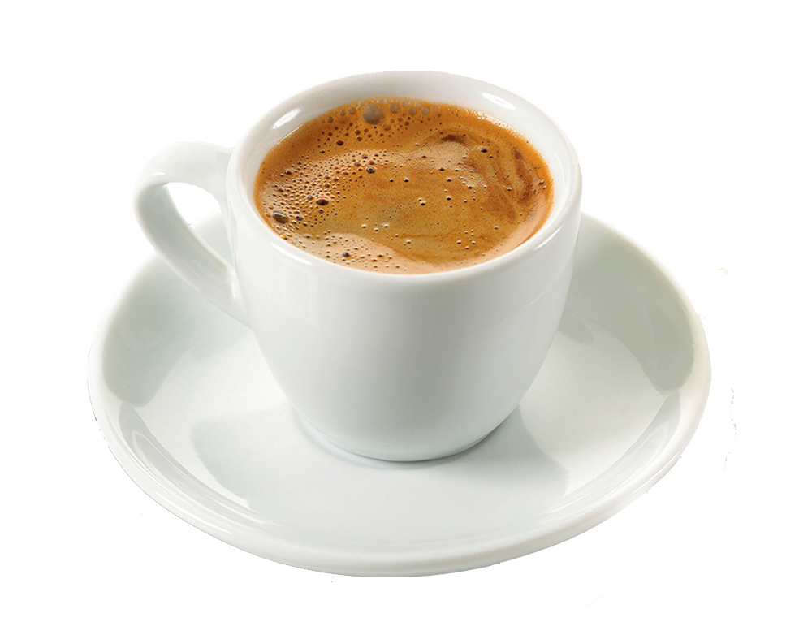

coffees



cuban expresso
Café Cubano is a type of espresso that originated in Cuba. Specifically, it refers to an espresso shot which is sweetened (traditionally with natural brown sugar which has been whipped with the first and strongest drops of espresso)However, the name is sometimes used to refer to coffee based drinks that include Cuban espresso as the main ingredient, such as café con leche.